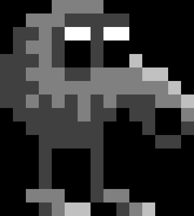
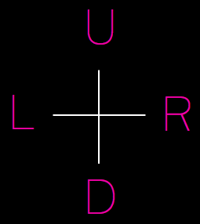

Welcome!
Arendelle is a language that makes a superhero programmer of you! So are you ready to become a very awesome programmer today? Read this very simple 1 minute tutorial!
1
So Arendelle is basicly a very very big Grid that starts in it's very top left like you see in this picture:
You have a cursor like the one in the images that points to the very first square of the grid. We call that Pointer.
2
You can move the pointer using this commands:

3
Now that you can move you need a command to fill the square of the grid you have moved in to. For that we use the P command:
4
So with what you know now you can write an image like this:
which will look like this:
5
Congratulations! You just learned how to write a glider which is the logo of hackers! You now have a basic knowledge of Arendelle and you can create so much with it. However you will need more information to use all of the tools of Arendelle. To learn all you should read our book. However you can just simply skip this window and try some of our examples waiting for you and read the book later!